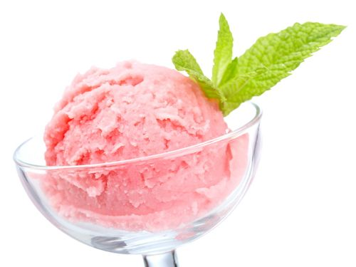

Ever wander about the history of this frozen treat? Well your wish is granted!
{kind=link}
The first official account of ice cream in the New World comes from a letter written in 1744 by a guest of Maryland Governor William Bladen. The first advertisement for ice cream in this country appeared in the New York Gazette on May 12, 1777, when confectioner Philip Lenzi announced that ice cream was available "almost every day." Records kept by a Chatham Street, New York, merchant show that President George Washington spent approximately $200 for ice cream during the summer of 1790. Inventory records of Mount Vernon taken after Washington's death revealed "two pewter ice cream pots." President Thomas Jefferson was said to have a favorite 18-step recipe for an ice cream delicacy that resembled a modern-day Baked Alaska. Check out President Jefferson's vanilla ice cream recipe here. In 1813, Dolley Madison served a magnificent strawberry ice cream creation at President Madison's second inaugural banquet at the White House. Until 1800, ice cream remained a rare and exotic dessert enjoyed mostly by the elite. Around 1800, insulated ice houses were invented. Manufacturing ice cream soon became an industry in America, pioneered in 1851 by a Baltimore milk dealer named Jacob Fussell.
Advancments in Technology
Like other American industries, ice cream production increased because of technological innovations, including steam power, mechanical refrigeration, the homogenizer, electric power and motors, packing machines, and new freezing processes and equipment. In addition, motorized delivery vehicles dramatically changed the industry. Due to ongoing technological advances, today's total frozen dairy annual production in the United States is more than 1.6 billion gallons. Wide availability of ice cream in the late 19th century led to new creations. In 1874, the American soda fountain shop and the profession of the "soda jerk" emerged with the invention of the ice cream soda. In response to religious criticism for eating "sinfully" rich ice cream sodas on Sundays, ice cream merchants left out the carbonated water and invented the ice cream "Sunday" in the late 1890's. The name was eventually changed to "sundae" to remove any connection with the Sabbath.
Our Soldiers in need for Ice Cream
{kind=link}
Ice cream became an edible morale symbol during World War II. Each branch of the military tried to outdo the others in serving ice cream to its troops. In 1945, the first "floating ice cream parlor" was built for sailors in the western Pacific. When the war ended, and dairy product rationing was lifted, America celebrated its victory with ice cream. Americans consumed over 20 quarts of ice cream per person in 1946. In the 1940s through the ‘70s, ice cream production was relatively constant in the United States. As more prepackaged ice cream was sold through supermarkets, traditional ice cream parlors and soda fountains started to disappear. Now, specialty ice cream stores and unique restaurants that feature ice cream dishes have surged in popularity. These stores and restaurants are popular with those who remember the ice cream shops and soda fountains of days past, as well as with new generations of ice cream fans.
{kind=link}
Here are some myths
There are several myths about the origin of ice cream. Some say Marco Polo brought it back from his travels to the Far East. Others say that Catherine de Medici introduced it to France when she relocated to marry King Henry II. Neither tale is likely to be true, though both are romantic. In fact, ice cream has a much more ancient history. Its earliest form holds very little resemblance to the ice cream we eat today. Biblical passages refer to King Solomon enjoying cooling iced drinks during harvest season. Alexander the Great of ancient Greece loved to indulge in icy drinks flavored with honey or wine. During Neros reign of Rome from 54 68 BC, ice was harvested from nearby mountains and held in ice housesdeep pits covered with straw. This practice of keeping ice in lieu of refrigeration would be common for centuries to come.
The emperors of the Tang Dynasty (618 907 AD) are believed to have been the first to eat a frozen milk-like confection. This version was made with cow, goat or buffalo milk that was heated with flour. Camphor, an aromatic substance harvested from evergreen trees, was added to enhance the texture and flavor. The mixture was then placed into metal tubes and lowered into an ice pool until frozen. This process is similar to the way Indians made kulfi prior to refrigeration. In medieval times, Arabs drank an icy refreshment called sherbet, or sharabt in Arabic. These chilled drinks were often flavored with cherry, pomegranate, or quince. Over time, the drinks became popular with the European aristocracy. Italians are said to have mastered this drink-making technique, with the French following suit shortly after. The 17th century saw ice drinks being made into frozen desserts. With the addition of sugar, sorbetto was createdor, as we more commonly know it, sorbet. Antonio Latini (16421692), a man working for a Spanish Viceroy in Naples, is credited with being the first person to write down a recipe for sorbetto. He is also responsible for creating a milk-based sorbet, which most culinary historians consider the first official ice cream.
{kind=link}